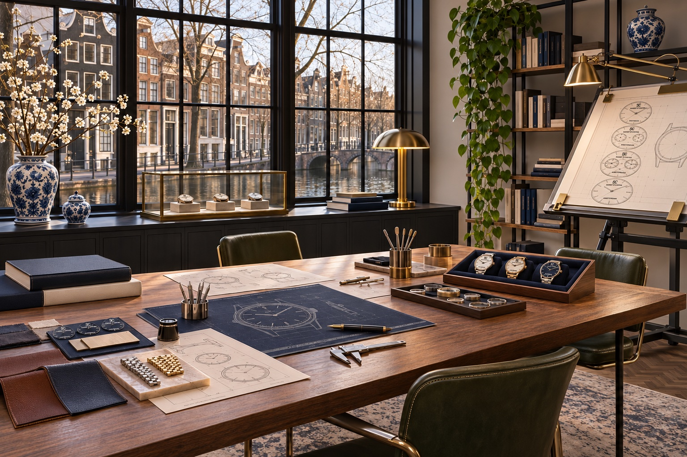

Contact
Start a conversation.
Collection questions, retail partnerships and press enquiries.
TIME REFINED
Speak with the team
Brand enquiries are handled by House Of Brands Fashion LLP. Email rajan@houseofbrands.in or contact us on WhatsApp at +91 73036 81194.
Retail & distribution
Introduce your business.
For retail, distribution or corporate enquiries, share your details with the House Of Brands team.
